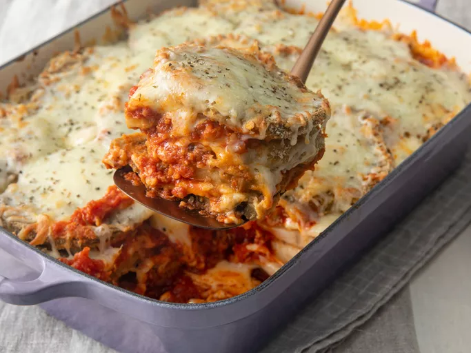
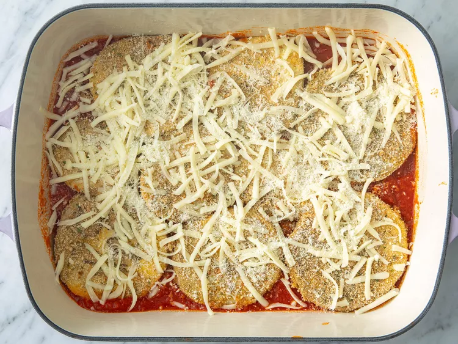
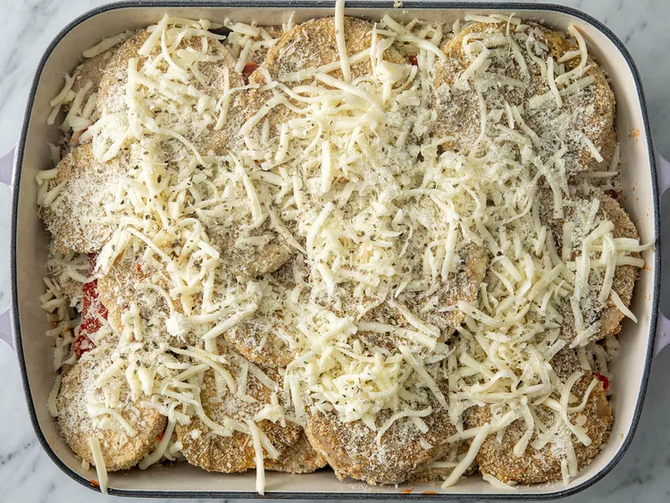

Eggplant Parmesan

Description
Eggplant Parmesan is a common Italian vegetarian dish I have tried at Olive Garden. The dish is primarily fried
crispy eggplant layered with parmesan cheese and marinara sauce, occasionally served with spaghetti on the side.
Ingredients
- 3 large eggplant, peeled and thinly sliced
- 2 large eggs, beaten
- 4 cups Italian seasoned bread crumbs
- 6 cups spaghetti sauce, divided
- 1 (16 ounce) package mozzarella cheese, shredded and divided
- 1/2 cup grated Parmesan cheese, divided
- 1/2 teaspoon dried basil
Steps
- Preheat the oven to 350 degrees F (175 degrees C).
- Dip eggplant slices in beaten egg, then in bread crumbs to coat. Place in a single layer on a baking sheet.

- Bake in the preheated oven for 5 minutes. Flip and bake for 5 more minutes.
-
Spread spaghetti sauce to cover the bottom of a 9x13-inch baking dish. Place a layer of eggplant slices in the sauce. Sprinkle with mozzarella and Parmesan cheeses.

- Repeat layers with remaining sauce, eggplant, and cheese, ending with a cheese layer. Sprinkle basil on top.

- Bake in the preheated oven until golden brown, about 35 minutes.
- Serve hot and enjoy!